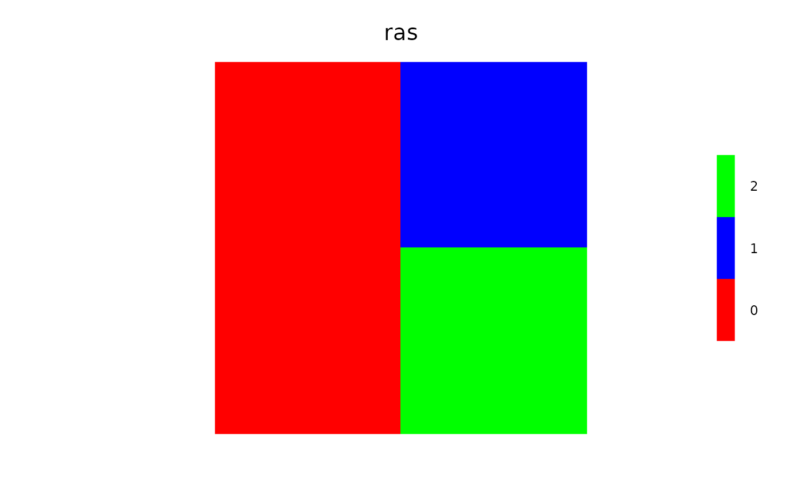
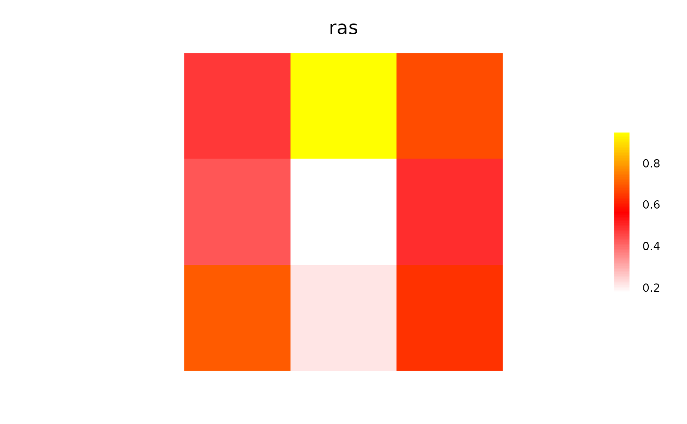
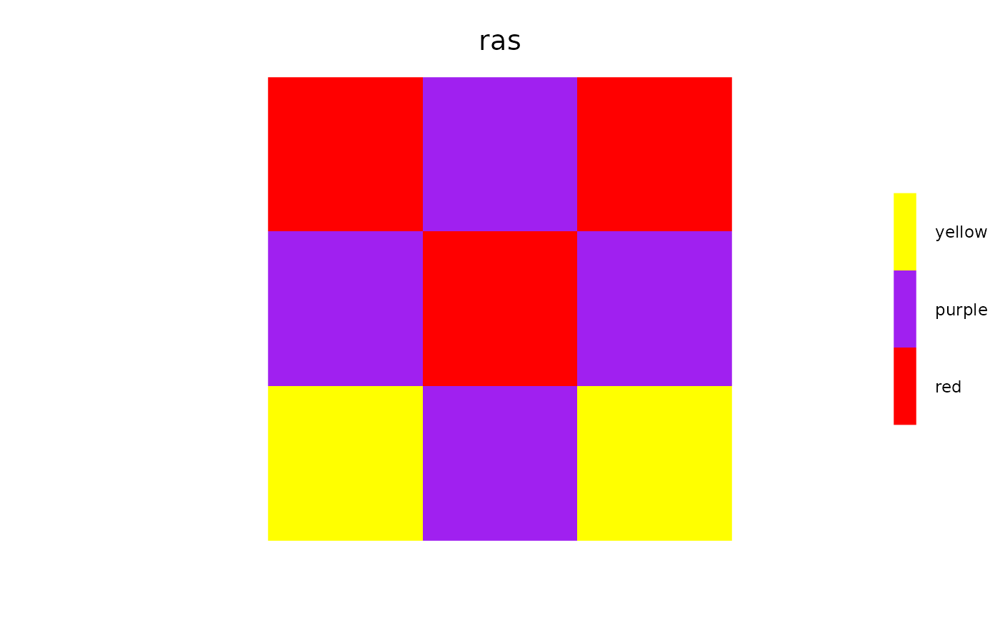
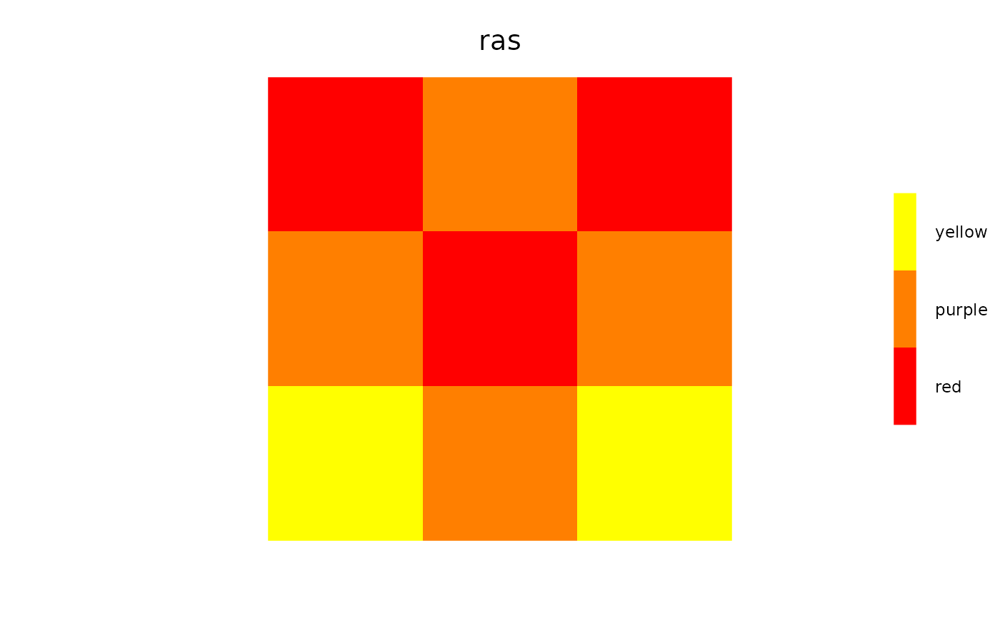
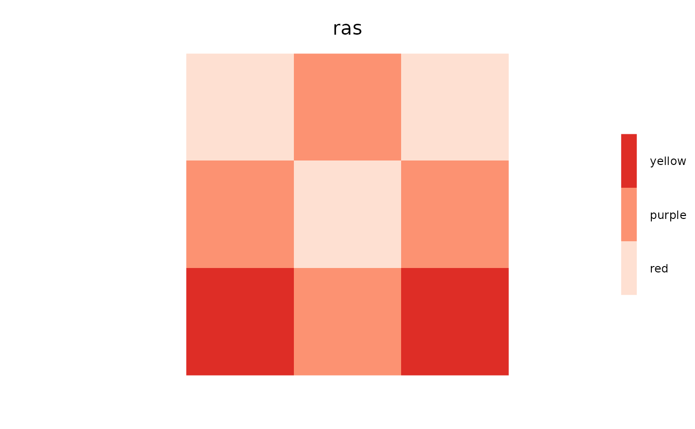

Get and set colours for plotting Raster* objects
setColors works as a replacement method or a normal function call.
This function can accept RColorBrewer colours by name. See examples.
getColors(object)
# S4 method for Raster
getColors(object)
# S4 method for ANY
getColors(object)
# S4 method for SpatialPoints
getColors(object)
setColors(object, ..., n) <- value
# S4 method for RasterLayer,numeric,character
setColors(object, ..., n) <- value
# S4 method for RasterLayer,missing,character
setColors(object, ..., n) <- value
# S4 method for RasterStack,numeric,list
setColors(object, ..., n) <- value
# S4 method for Raster,missing,list
setColors(object, ..., n) <- value
setColors(object, value, n)
# S4 method for RasterLayer,character,numeric
setColors(object, value, n)
# S4 method for RasterLayer,character,missing
setColors(object, value)A Raster* object.
Additional arguments to colorRampPalette.
An optional vector of values specifying the number of levels from which to interpolate the colour palette.
Named list of hex colour codes (e.g., from
RColorBrewer::brewer.pal), corresponding to the names
of RasterLayers in x.
Returns a named list of colours.
Returns a Raster with the colortable slot set to values.
setColors<-(), brewer.pal()
library(igraph)
library(raster)
ras <- raster(matrix(c(0, 0, 1, 2), ncol = 2, nrow = 2))
getColors(ras) ## none
#> $layer
#> character(0)
#>
# Use replacement method
setColors(ras, n = 3) <- c("red", "blue", "green")
getColors(ras)
#> $layer
#> [1] "#FF0000FF" "#0000FFFF" "#00FF00FF"
#>
clearPlot()
Plot(ras)

# Use function method
ras <- setColors(ras, n = 3, c("red", "blue", "yellow"))
getColors(ras)
#> $layer
#> [1] "#FF0000FF" "#0000FFFF" "#FFFF00FF"
#>
clearPlot()
Plot(ras)
# Using the wrong number of colors, e.g., here 2 provided,
# for a raster with 3 values... causes interpolation, which may be surprising
ras <- setColors(ras, c("red", "blue"))
clearPlot()
Plot(ras)
# Real number rasters - interpolation is used
ras <- raster(matrix(runif(9), ncol = 3, nrow = 3)) %>%
setColors(c("red", "yellow")) # interpolates when real numbers, gives warning
clearPlot()
Plot(ras)

# Factor rasters, can be contiguous (numerically) or not, in this case not:
ras <- raster(matrix(sample(c(1, 3, 6), size = 9, replace = TRUE), ncol = 3, nrow = 3))
levels(ras) <- data.frame(ID = c(1, 3, 6), Names = c("red", "purple", "yellow"))
ras <- setColors(ras, n = 3, c("red", "purple", "yellow"))
getColors(ras)
#> $layer
#> [1] "red" "purple" "yellow"
#>
clearPlot()
Plot(ras)

# if a factor raster, and not enough labels are provided, then a warning
# will be given, and colors will be interpolated
# The level called purple is not purple, but interpolated betwen red and yellow
suppressWarnings({
ras <- setColors(ras, c("red", "yellow"))
clearPlot()
Plot(ras)
})
#> Number of colours not equal number of values: interpolating

# use RColorBrewer colors
setColors(ras) <- "Reds"
#> Number of colours not equal number of values: interpolating
clearPlot()
Plot(ras)
